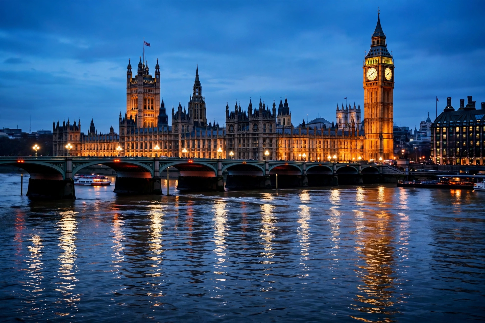

Parliament
From Wikipedia, the free encyclopedia
A parliament is a type of legislature in a democracy. A parliament is also the period of time that members are elected for. It is named after the French word parler — to speak — the original parliaments being assemblies called by a monarch to discuss and grant taxation. Modern parliaments typically make and amend laws, approve budgets and taxation, and scrutinise the executive.

The Palace of Westminster, seat of the Parliament of the United Kingdom.
Parliamentary systems take their name from the institution: in a parliamentary system, the government is drawn from, and accountable to, the parliament, which may dismiss it by a vote of no confidence. Parliaments may be bicameral — with an upper and a lower house — or unicameral. The lower house is almost always directly elected; upper houses vary from elected senates to appointed or hereditary chambers.
History
Assemblies advising rulers are ancient, but the English Parliament, evolving from the royal council and curia regis, is often called the “Mother of Parliaments”: Simon de Montfort's parliament of 1265 admitted elected representatives of the shires and boroughs, and the Model Parliament of 1295 set the pattern of lords and commons. Over the following centuries Parliament asserted control over taxation, survived civil war, and by the Bill of Rights 1689 secured its position against the Crown. Similar institutions developed or were adopted worldwide, from Iceland's Althing, founded in 930 and often described as the world's oldest parliament, to the estates and diets of continental Europe.
Functions and procedure
A parliament's core functions are legislation, representation, scrutiny and supply (granting money). Business is organised through parties and presided over by a speaker; bills pass through readings and committee stages before receiving assent and becoming law. Question periods, committees and debates hold ministers to account between elections.
See also
Legislature · Parliamentary system · Bicameralism · Member of parliament · Parliament of the United Kingdom